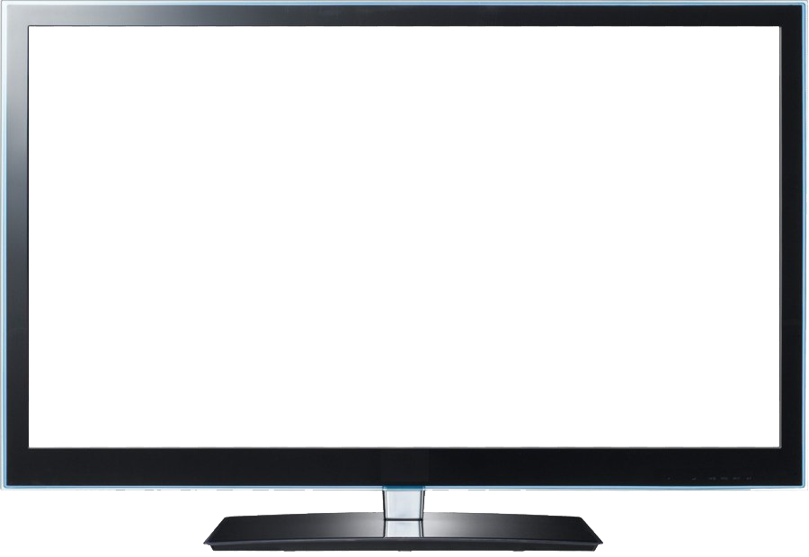

<!-- common header show -->
<common-header></common-header>

<ion-content *ngIf="screenReturnData">

    <!-- <div class="order-track" *ngIf="registered">
        <a href="#">Track Your Order</a>
    </div> -->
    <!-- <div class="loder"><ion-spinner name="bubbles" color="tertiary" *ngIf="load"></ion-spinner></div>
    <div *ngIf="!load"> -->
        <div class="main-content others">
            <section id="screen_size">
                <h3 class="main-title">
                    SELECT SCREEN SIZE
                </h3>
                <div class="screen_size">
                    <div class="allitem formBox">
                        <div class="items">
                            <ion-grid>
                                <ion-row>
                                    <!-- <div  class="ion-text-center flex-box"> -->
                                        <ion-col size="6" *ngFor="let screen of screenReturnData">
                                            <div class="item"  (click)="setDisplaySize(screen?.id)">
                                                <div class="imgbox">
                                                    <div class="screen-text">{{screen?.size}}</div>
                                                    
                                                </div>
                                                <div class="btnbox">
                                                    <button class="btn btn-theme size-small">Select</button>
                                                </div> 
                                            </div>
                                        </ion-col>
                                </ion-row>
                            </ion-grid>
                        </div>
                        <div class="items">
                            <ion-grid>
                                <ion-row>
                                    <!-- <div  class="ion-text-center flex-box"> -->
                                        
                                    <!-- </div> -->
                                </ion-row>
                            </ion-grid>
                        </div>
                    </div>
                    <div class="form-btn">
                        <button class="btn btn-theme size-big" [disabled]="disabled" (click)="gotoProductPage()">Next</button>
                    </div>
    
                </div>
                
            </section>
            
        </div>
    <!-- </div> -->
</ion-content>

<!-- common footer show -->
<common-footer></common-footer>